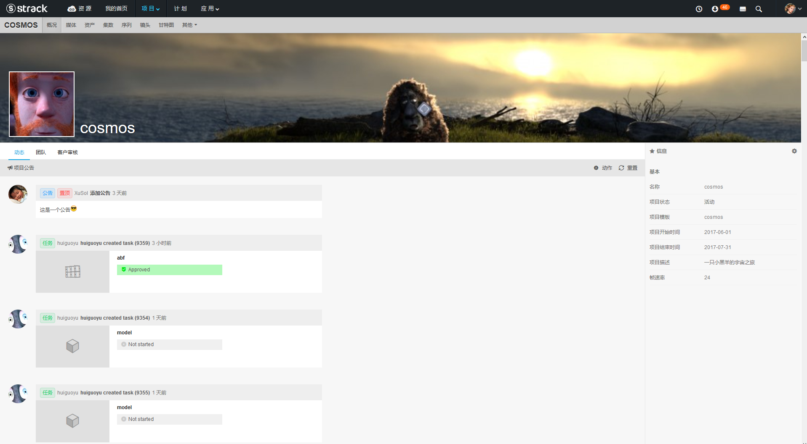
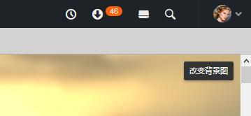
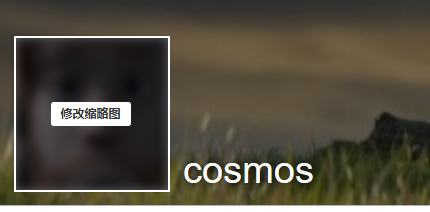
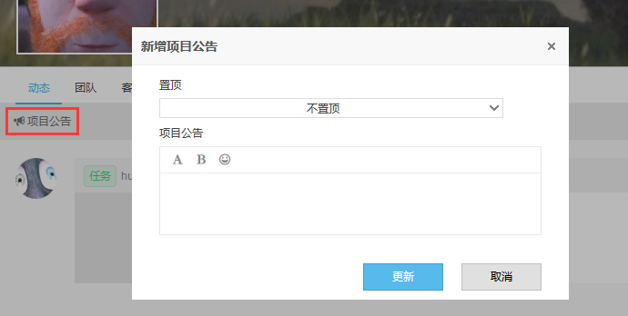
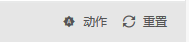
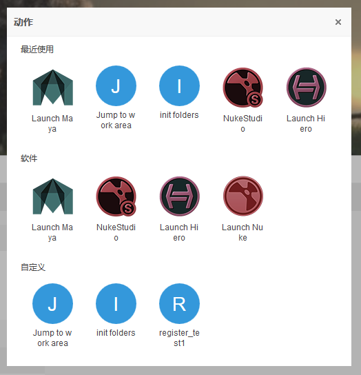
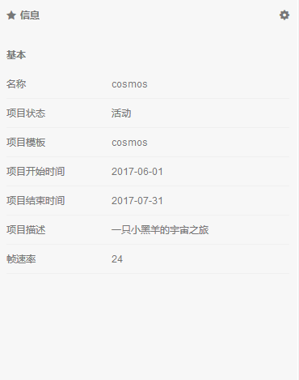
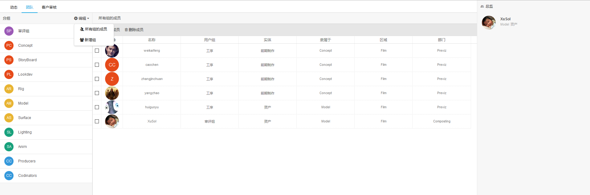
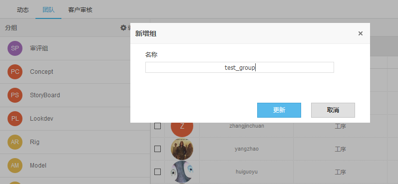
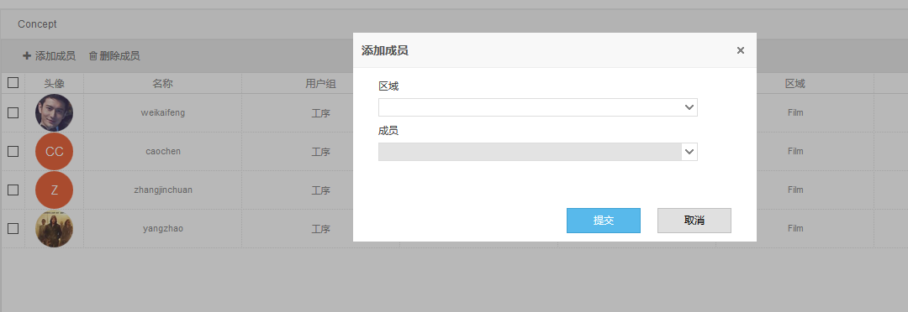

模块简介
当前页面为项目概况信息页面，主要显示项目公告，动态信息。管理当前项目团队分组人员，管理客户审核会话和意见。
页面预览

1.上传项目背景图
点击背景图片右上角“改变背景图”按钮，推荐图片尺寸1920px*260px 。

2.上传项目缩略图

项目动态
项目动态模块分为三个功能区，
- 编辑工具栏（添加公告，重置项目页面缓存，触发项目Action）。
- 项目信息显示编辑区域。
- 项目任务信息动态显示区域。
1.添加项目公告
项目可以添加项目全局性通知，项目公告默认在任务动态之上，可以选择置顶当前公告。

2.重置按钮
重置当前项目页面缓存。

3.项目Action面板
Action详细介绍请查看动作章节（Action）

4.项目信息区域
可以点击每条信息右边铅笔图标进去编辑模式，修改项目对应条目信息。

项目团队
项目团队管理，是在系统用户用户组管理之下在项目内用户管理，默认不启用。一旦在项目团队下面某个分组添加了用户成员，则默认开启当前项目团队，会影响到当前项目所有人员分配列表。

1.团队分组
进入项目团队页面用户会发现已经存在了以下几种默认分组。橙色、黄色、绿色分组为当前项目模板设置的默认工序自动生成分组。
- 紫色 审评组 每个环节组长或者总监
- 橙色 前期制作组
- 黄色 资产组
- 绿色 镜头组
- 蓝色 自定义分组
2.创建自定义分组
点击分组工具栏，编辑->新增组

3.添加分组成员
选择一个分组点击中间表格区域工具栏，添加成员。

3.删除分组成员
点击表格区域工具栏，删除成员。